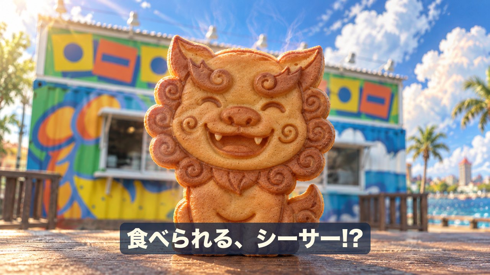
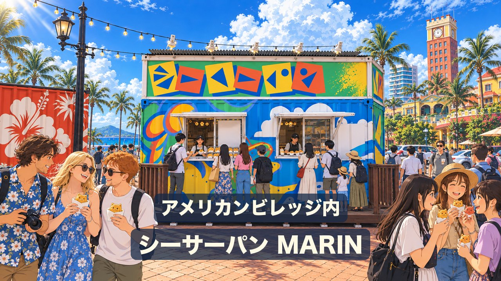
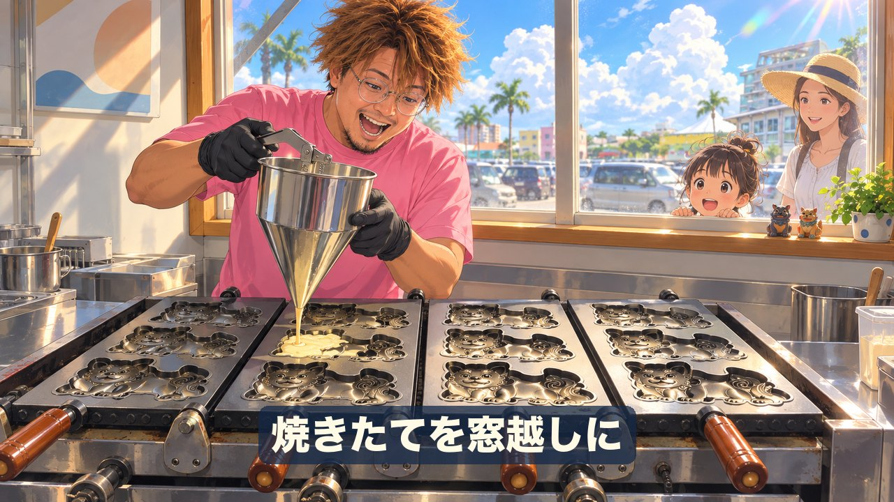
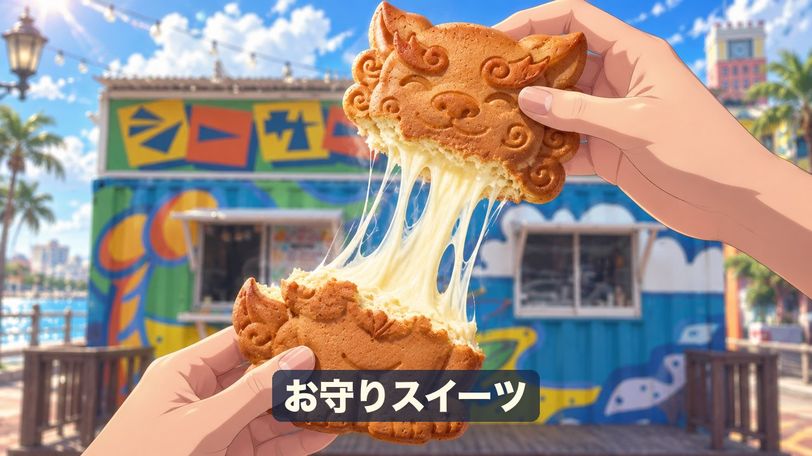
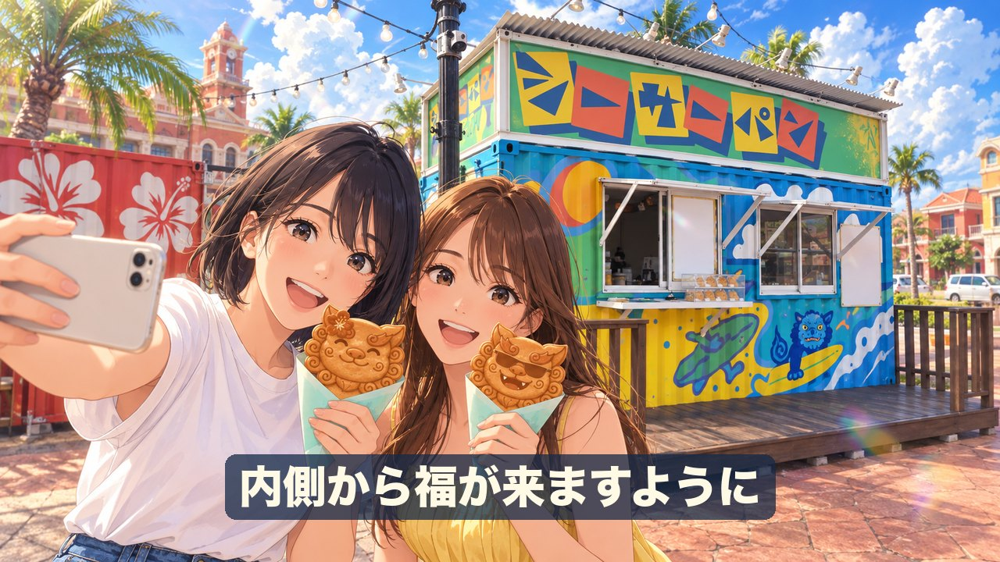
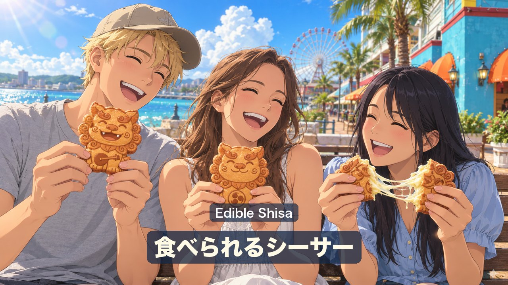
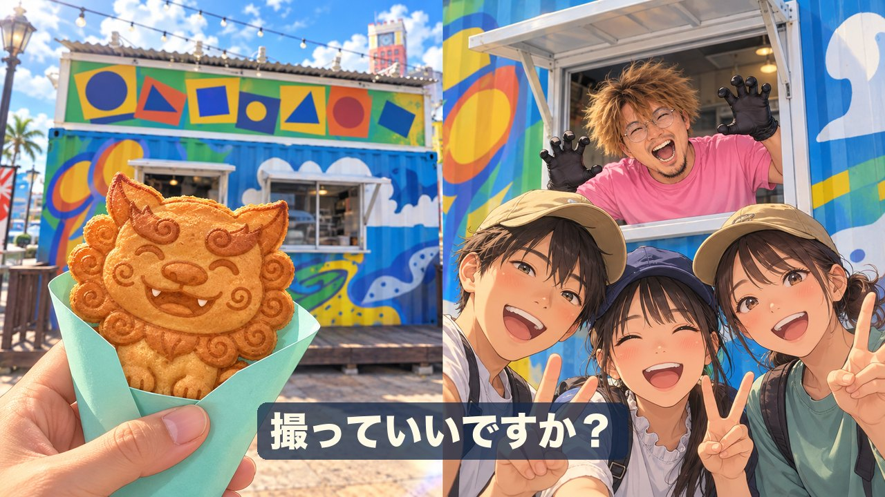
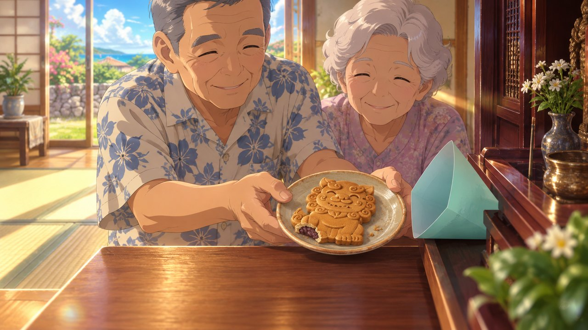
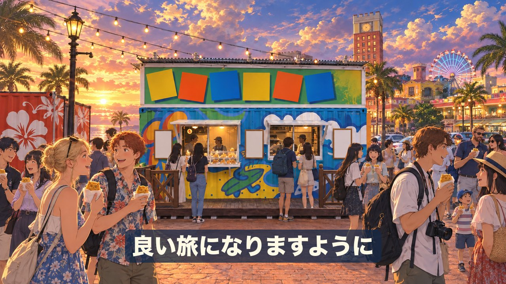
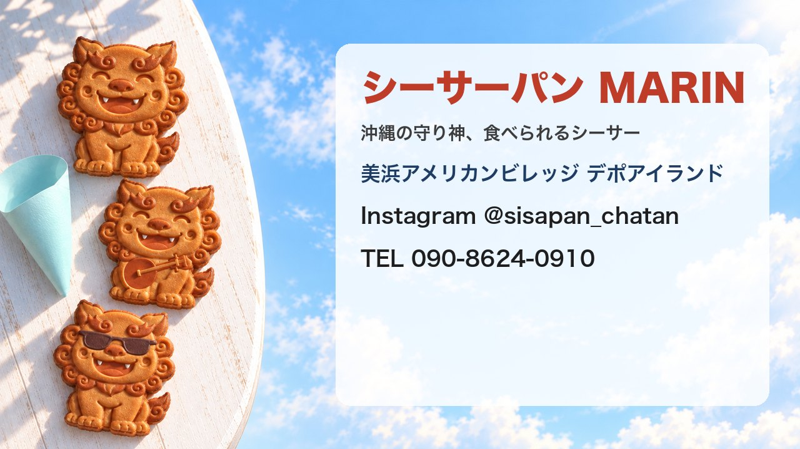

比嘉 渉夢 様 ／ 人物・街＝アニメ × シーサーパン＝実写 のミックス ／ 30秒・10シーン ／ 2026-10-08 ご確認用（静止画つなぎの仮モック・v3＝お送りいただいた店舗写真・イラストデータ・ご本人写真を反映）










沖縄の守り神、食べちゃう？
アメリカンビレッジの中にある、シーサーパン MARIN。
窓の向こうで、焼きたて。
ひとつひとつに、願いを込めて。
食べると、内側から福が来ますように。
旅の思い出に、食べられるシーサー。
世代をこえて、愛されて。
良い旅に、なりますように。
アメリカンビレッジ、シーサーパン MARINで。
今回仮置きした点（違うご希望があればお知らせください）